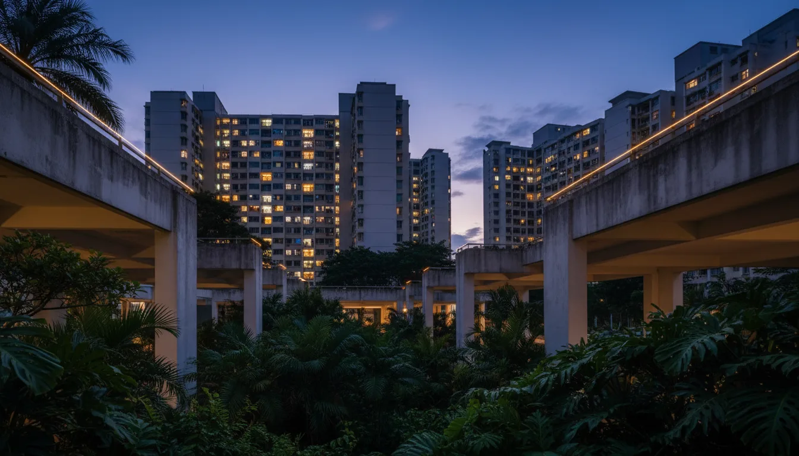

Singapore PR Buying HDB Flat 2026: Eligibility, ABSD & Loan Guide

- What a PR can and cannot buy from HDB
- The four HDB schemes open to SPRs
- The 3-year SPR wait, explained
- ABSD for SPRs — 5% on the first property
- Financing: bank loan only, no HDB concessionary loan
- MSR, TDSR and the 4% stress test
- CPF rules for an SPR HDB buyer
- The 15-month private-to-HDB wait
- EIP and the SPR Quota
- Three moves to make this month
What a PR Can and Cannot Buy from HDB
Singapore Permanent Residents (SPRs) sit in a narrower lane than citizens when it comes to public housing. The hard line: no BTOs, no Sale of Balance Flats, no Open Booking direct from HDB. The full new-build pipeline is reserved for Singapore Citizens. SPRs buy HDB resale flats on the open market, full stop.
Within resale, eligibility splits by household composition (which scheme), how long the SPR has held PR status, age, and whether either applicant has held private property in the last 15 months. PropertyGuru's SPR HDB explainer walks the scheme grid; this guide adds the financing layer that PropertyGuru's piece deliberately stops short of — ABSD, the no-HDB-loan rule, MSR/TDSR math, CPF mechanics and the 15-month wait. All policy positions cross-checked against HDB's official eligibility page.
The Four HDB Schemes Open to SPRs
HDB resale eligibility is scheme-based. Four routes are realistic for an SPR. Pick the one that matches household composition; the rest follow.
| Scheme | Who Qualifies | Min SPR Tenure | Min Age |
|---|---|---|---|
| SC/SPR Family Scheme | At least 1 SC + 1 SPR family member (spouse, parent, child, sibling) | Day 1 (no wait) | 21 |
| Public Scheme | Both applicants are SPRs forming a family nucleus | 3 years for both | 21 |
| Fiance/Fiancee Scheme | Engaged couple, at least 1 SC; SPR partner OK | Day 1 if SC anchor | 21 |
| Single SPR | Generally not eligible to buy alone; can be added as occupier in a citizen-led purchase | n/a | n/a |
Two patterns dominate in practice. SC/SPR Family covers the typical case — a Singaporean marrying an SPR — and unlocks HDB resale from day one of PR status. Public Scheme covers two-SPR households and triggers the 3-year wait. Pure single-SPR ownership of an HDB flat is not a direct path; the standard workaround is to join a citizen-led nucleus.
For full scheme rules including occupier status and household quotas, the authoritative source is HDB's resale eligibility page. Citizenship status is verified via ICA records during HDB's resale checklist step.
The 3-Year SPR Wait, Explained
Under the Public Scheme — two SPR co-applicants — both must have held Singapore Permanent Resident status for at least 3 continuous years before HDB will process the resale application.
The 3-year wait sits at the core of the Public Scheme and trips up more SPR buyers than any other rule. Both applicants must have been Singapore Permanent Residents for at least 3 continuous years at the time of HDB's resale application. The wait does not apply when one applicant is a Singapore Citizen (SC/SPR Family Scheme), nor when an SPR is buying with a citizen fiance/fiancee.
Two common traps:
- PR-renewal gaps. If your Re-Entry Permit lapsed and you re-obtained PR, the clock may reset. Confirm continuous PR via ICA records before serving OTP.
- Mixed tenure households. One spouse with 5 years' PR and another with 18 months' PR still fails the Public Scheme. The fix is either wait, or have one party obtain citizenship and switch to SC/SPR Family.
An In-Principle Approval from a bank does not waive the HDB eligibility wait. Loan eligibility and HDB scheme eligibility are checked independently.
ABSD for SPRs — 5% on the First Property
Citizenship status drives Additional Buyer's Stamp Duty. Singapore Citizens pay 0% ABSD on the first residential property. SPRs pay 5%. The schedule under IRAS ABSD rules:
| Buyer Profile | 1st Property | 2nd Property | 3rd+ |
|---|---|---|---|
| Singapore Citizen | 0% | 20% | 30% |
| Singapore PR | 5% | 30% | 35% |
| Foreigner | 60% | 60% | 60% |
For a mixed-citizenship couple (1 SC + 1 SPR) under the SC/SPR Family Scheme buying jointly, IRAS' default rule applies the higher ABSD rate of the two profiles — in this case 5% (the SPR rate). The escape hatch is the ABSD Remission for Married Couples, which can drop the effective ABSD all the way to 0% (SC rate) if every condition is met. Conditions:
- Couple is legally married at the date of purchase.
- Property is held in both joint names.
- Neither party owns any other residential property at the time of purchase (any prior property must be sold and disposed before OTP).
- Property is the sole matrimonial home — cannot be rented out as a whole unit.
- Application filed with IRAS within 6 months of the stamp duty date.
The remission is application-based, not automatic. The 5% ABSD is paid in cash within 14 days of OTP, and the refund lands later once IRAS clears the application. Cashflow plan must front the full ABSD, then recover.
Three real-world traps:
- SC already owns property. No remission available — the purchase is counted as the SC's 2nd property at 20% ABSD (the higher of SC-2nd at 20% and SPR-1st at 5%). The mixed-couple remission only works when neither party owns any other residential.
- Two-SPR couple. Matrimonial home or not, both stay on SPR rate at 5%. No SC anchor means no SC-rate remission.
- Late filing. Miss the 6-month window and the 5% ABSD stays paid. On a S$650,000 flat that's S$32,500 left on the table.
Worked Example — S$650,000 HDB Resale
- Buyer's Stamp Duty (tiered 1%/2%/3%/4%): ~S$15,600.
- ABSD as SPR (first property): 5% × S$650,000 = S$32,500.
- Total stamp duty: ~S$48,100, payable within 14 days of OTP exercise.
SPR ABSD is paid in cash up-front; it is not financed by the bank loan. CPF can reimburse after settlement but the cash needs to clear IRAS first. Plan the working-capital line before signing OTP.
Financing: Bank Loan Only, No HDB Concessionary Loan
No HDB concessionary loan for SPR-only households — financing is bank-loan only, against MAS Notice 645 stress test and MSR/TDSR caps.
The single biggest financing constraint for SPRs: the HDB concessionary loan (currently 2.6% p.a., set at 0.1% above the prevailing CPF Ordinary Account rate) is reserved for households with at least one Singapore Citizen. A two-SPR household under the Public Scheme has no HDB loan option — bank loan only.
Mixed SC/SPR Family Scheme households can choose either: the citizen applies for the HDB loan in their name, or the household takes a bank loan. The right call depends on rate level, the SC/SPR income split and bonus-cash-out planning. Our HDB loan vs bank loan piece walks the decision tree.
Bank Loan Mechanics for an SPR HDB Resale
- LTV: max 75% on a first property bank loan — same as the HDB concessionary loan since the 20 August 2024 cooling measures cut HDB loan LTV from 80% to 75%. 25% down: 5% cash + 20% cash/CPF.
- Tenure: capped at 30 years or age 65, whichever earlier. Longer than 25 years drops LTV to 55%.
- Stress test: MAS forces a 4% medium-term floor regardless of contracted rate. See our MAS 4% stress test guide.
- Current rates: fixed from around 1.40% p.a.; 1M SORA-pegged floating at 1M SORA + 0% spread (~1.14% effective today and trending up). Live comparison on our rates page.
MSR, TDSR and the 4% Stress Test
HDB flats — including those bought by SPRs via bank loan — are subject to both:
- MSR (Mortgage Servicing Ratio): monthly mortgage instalment cannot exceed 30% of gross monthly income.
- TDSR (Total Debt Servicing Ratio): all monthly debt (mortgage + car + credit cards + personal loans) cannot exceed 55% of gross monthly income, per MAS Notice 645.
On HDB purchases, MSR usually binds first because 30% < 55% headroom. The mechanics, joint-applicant treatment and pledge/show-fund top-ups are covered in detail in our TDSR & MSR breakdown.
Worked Example — S$650,000 Flat, Bank Loan
A two-SPR couple buys a S$650,000 HDB resale on 75% LTV bank loan (S$487,500 loan, 30-year tenure). Stress-test instalment at the 4% MAS floor: ~S$2,326/mo. To clear the 30% MSR, combined gross monthly income must be at least ~S$7,755. Existing car loans or personal loans eat into the TDSR 55% but only the MSR 30% bites here.
CPF Rules for an SPR HDB Buyer
SPRs who work in Singapore and contribute to CPF can use CPF Ordinary Account funds toward the HDB resale purchase, subject to the same Valuation Limit and Withdrawal Limit framework that applies to citizens. Headline rules at the CPF Home Ownership portal:
- OA can fund the 20% non-cash portion of the down payment, monthly instalments, BSD/ABSD reimbursement, legal fees.
- Valuation Limit (VL) is the property price or valuation, whichever lower. CPF usage up to VL is straightforward.
- Withdrawal Limit (WL) — usage above VL caps at 120% of VL and requires meeting the Basic Retirement Sum in RA from age 55. For long-tenure SPR buyers, this matters at refinance time.
- SPR-specific note: CPF eligibility depends on continued CPF contributions in Singapore. If you leave the SPR scheme or stop working in Singapore, CPF top-ups to OA cease — the loan must be serviceable from non-CPF cashflow alone.
The 15-Month Private-to-HDB Wait
Since 30 September 2022, both SCs and SPRs who currently own or have previously owned private residential property (in Singapore or overseas) must wait 15 months from disposal before they can buy an HDB resale flat. The rule is enforced via HDB's resale checklist. Two exceptions:
- Singapore Citizens aged 55 and above buying a 4-room or smaller resale flat may be exempt — verify the current carve-out at the time of purchase.
- The wait applies to private property ownership; selling an HDB flat to buy another HDB does not trigger the 15-month wait (the standard MOP and SPR Quota rules still apply).
Practical implication for SPR upgraders/downgraders: sell the private property, count 15 months, then start the HDB resale search. Plan the rental gap and the CPF refund cycle in between. If buying with a citizen spouse under SC/SPR Family Scheme, the same 15-month rule applies to whichever party owned the private property.
EIP and the SPR Quota
Two overlapping quotas govern who can move into which block:
- Ethnic Integration Policy (EIP): caps the proportion of each ethnic group (Chinese, Malay, Indian/Other) per block and per neighbourhood, to preserve ethnic mixing.
- SPR Quota: caps the proportion of SPR households per block and per neighbourhood, separate from EIP. Once a block hits its SPR ceiling, no further SPR households can buy in until a unit turns over.
Both quotas are checked at the resale application stage. A unit can be physically available, priced agreed, and OTP signed — and still be rejected by HDB if the buyer profile would push the block over an EIP or SPR Quota threshold. The seller's listing typically discloses both quotas; if not, ask the agent for the block-level numbers before serving OTP.
Three Moves to Make This Month
- Confirm scheme + 3-year clock. If you and your partner are both SPRs, count continuous PR years via ICA. If one is a citizen, the SC/SPR Family Scheme bypasses the wait entirely.
- Run the ABSD + cash schedule. 5% ABSD plus BSD on a typical resale = roughly S$45,000-S$80,000 in cash within 14 days of OTP. Make sure the cash buffer clears IRAS before signing.
- Get a bank-loan IPA, sized against MSR. Two-SPR households cannot fall back on the HDB loan; the bank IPA is the only safety net for the 1% OTP fee. An independent IPA compares 16+ banks in 14 days.
- Grab the playbook. Download the Singapore Mortgage Free Report — SPR HDB cashflow schedule, ABSD/BSD calculator, MSR/TDSR worksheet, and 15-month-wait timing matrix in one PDF.
Free, Independent Second Opinion on Your SPR HDB Loan
Nexus Mortgage SG compares 16+ MAS-regulated banks at zero cost — IPA in 14 days, MSR/TDSR modelled at the 4% stress floor, ABSD cashflow on one page.
Run My HDB Resale Numbers →Prefer a personal review? WhatsApp Dan Ler at +65 8752 0859 for a free portfolio assessment. Banks pay our fee — you pay nothing.
Or download the full playbook: Singapore Mortgage Free Report — SPR HDB ABSD/BSD schedule, MSR/TDSR worksheet and 15-month wait timing in one PDF.

About the author — Dan Ler is a Mortgage Advisor at Nexus Mortgage SG, an independent Singapore brokerage that works with 16+ MAS-regulated lenders. Nexus has facilitated 500+ home loans across HDB, EC, private condo and landed property segments. Banks pay Nexus on disbursement, so there is no cost to the borrower.
Nexus Mortgage SG is an independent Singapore mortgage advisory. This article is general information, not financial advice. Figures are illustrative and reflect HDB, IRAS, MAS, CPF and ICA positions as of 15 May 2026; rules and bank rates can change. Sources: HDB Resale Eligibility, IRAS ABSD, MAS Notice 645, CPF Home Ownership, ICA, PropertyGuru SPR HDB guide.